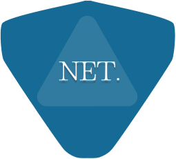

Allison Lopes da Silva Bosco

Lucas
Felipe

Descrição do projeto:
O projeto Net-Shield tem como objetivo desenvolver um sistema de segurança da informação para proteger prontuários eletrônicos. Com o aumento da digitalização dos registros médicos, a segurança desses dados se torna crucial para garantir a privacidade dos pacientes e a integridade das informações. O Net-Shield implementará medidas de criptografia, autenticação e controle de acesso para assegurar que apenas pessoas autorizadas possam acessar os prontuários eletrônicos, além de monitorar atividades suspeitas e fornecer alertas em tempo real para prevenir possíveis violações de segurança.